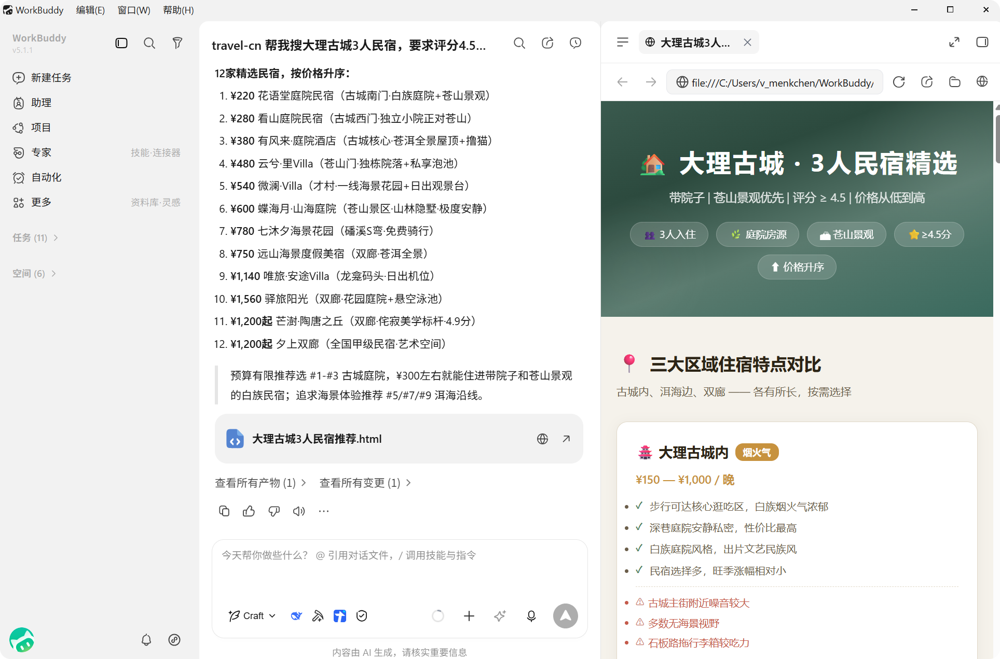

创建任务
描述任务
WorkBuddy 的核心优势是理解自然语言。您只需用一句话描述需求，它就能自主规划和执行。
示例：
- "帮我把这份销售数据生成一个分析报告，包含图表"
- "整理 Downloads 文件夹里的图片，按日期分类"
- "根据这份会议纪要生成一个 PPT"
- "分析这份简历，提取关键信息生成表格"
- "调研一下 2024 年 AI 行业趋势，写一份报告"
选择工作空间
您可以为任务指定工作目录：
- 点击输入框左下角的 选择工作空间，选择当前任务要使用的目录
- 选择完成后，WorkBuddy 会基于该目录读取和处理文件
- 也可以直接开始任务，WorkBuddy 会在默认目录中生成结果
添加上下文
在创建任务时，您可以补充上下文，让 WorkBuddy 更快理解需求：
| 方式 | 说明 |
|---|---|
| 引用上下文 | 通过 @ 引用文件、文档、规则等信息 |
| 粘贴截图 | 使用 Ctrl/Cmd + V 直接粘贴剪贴板中的图片 |
| 上传文件 | 点击上传按钮或拖拽文件到输入框 |
| 补充说明 | 在任务描述中明确目标、范围、约束和预期输出 |
建议优先补充以下信息：
- 目标是什么：要生成什么内容，或要处理什么文件
- 输入是什么：需要分析的数据、参考的文档
- 输出格式：希望得到 Word、Excel、PPT 还是其他格式
- 约束条件：风格要求、字数限制、截止时间等
任务创建成功
任务创建成功后：
- 新任务会出现在左侧任务列表中
- 对话区会持续展示 WorkBuddy 的执行过程和输出内容
- 右侧结果区会根据任务类型展示产物、全部文件、变更和预览等结果
- 您可以继续补充消息，或同时创建其他任务并行推进
